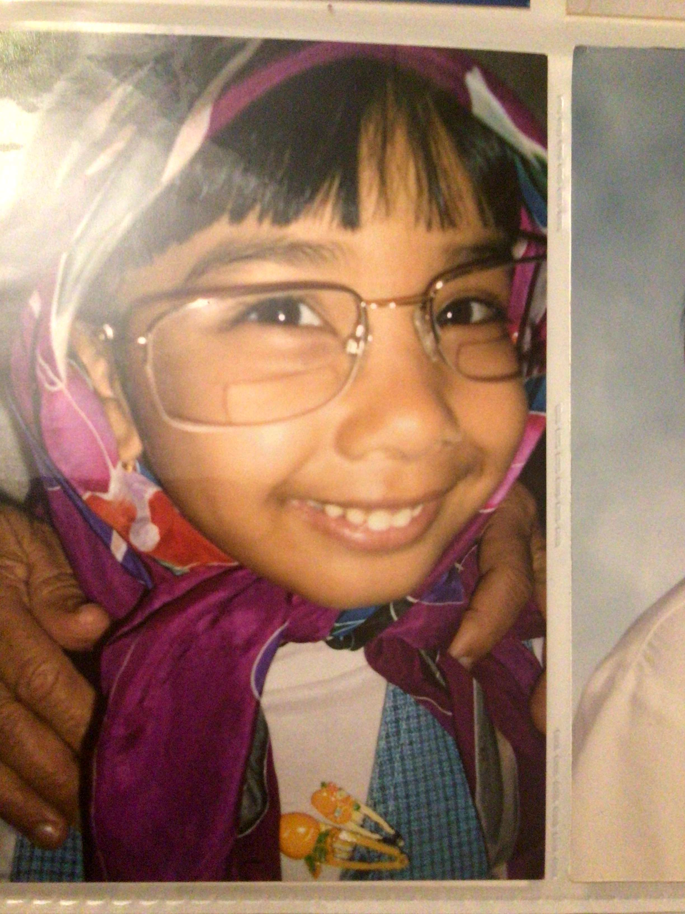

About Me
"The purpose of our lives is to be happy." Dalai Lama
My name is Anita Gautama, and I was born in Hong Kong. I am from a mixed family with an Indian/Kenyan father and a Hong Konger Mother. My family and I grew up on an island called Lamma, where all sorts of creatures crawled and slithered. We had a wide selection of wildlife—including the poisonous and venomous—thanks to the abandoned biological warfare projects from WWII. As a child I enjoyed playing outside and swimming in the South China Sea where we were surrounded by marine animals of all kinds. There were sharks, dolphins, flying fish, turtles, and so many others.
I moved to Canada in my 11th year. It took some getting used to, but I have been fortunate enough to meet my best friends here, along with many wonderful friends. I discovered many things about myself since moving across the globe. I discovered my love for baking, for art and horror, cooking, and so many other things. I love snow, but I don't like slush or shoveling. I love anything maple syrup, and I probably apologize too much. I have a soft spot for the elderly and have dedicated a lot of my time to taking care of them, volunteering at retirement homes, and even working at one for a few years. I love watching the leaves rapidly changing colours and the crunch of them beneath my boots. I love watching the wildlife, and how different they are from the ones back in Hong Kong. I am a long way from my birthplace but there are so many beautiful things to discover here.
My favourite memories from Canada are mostly the travel. I often forget how vast this country is, and how much there is to see. I spent the summer of 2022 travelling across the Eastern Provinces. We started In Ontario (obviously) and made our way through Quebec, New Brunswick, Novia Scotia, PEI, and Newfoundland and Labrador. As for my favourite place, it's really a toss-up between Newfoundland and Novia Scotia. The mountains and clear rivers of Gros Morne were breathtaking, and the seafood there was the freshest I had ever tasted. Novia Scotia's coastline, however, and more specifically the Cabot Trail, was insanely beautiful. I am so fortunate to have seen such sights and bask in them. I hope to travel to the west coast soon enough, especially to BC.
My favourite person in the world has to be my grandmother. Although she is no longer with us, she will forever remain in my heart as the bravest and kindest person ever. She was an artist and greatly influenced my artistic abilities as a child. We would spend hours painting together and singing. She had an amazing voice and was overall the most talented and amazing woman.
This is an image of eight-year-old me dressed like my grandmother. She's in the background of this image, and was most likely the one who put me up to this.
My Hobbies
If I had to list my hobbies in order of most enjoyment, I would say:
- Travelling
- Baking
- Drawing
- Cooking
- Painting
Though I was able to order my hobbies from most to "least" enjoyment, I of course love them all.